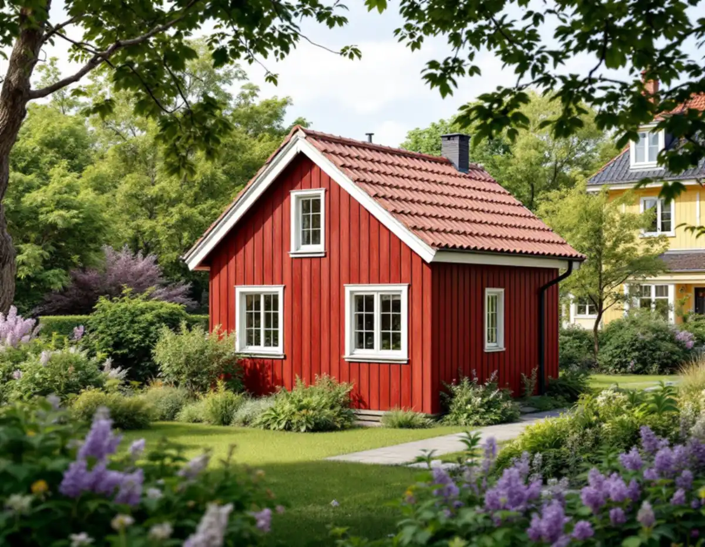
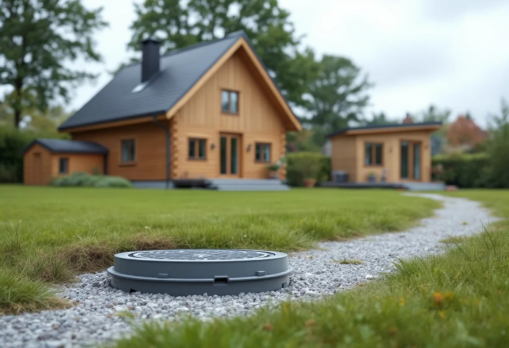
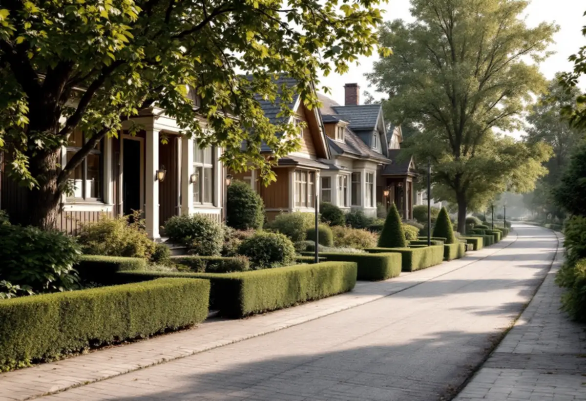

Kartan
Riksintresse, gröna ringar och husets färg i Stadsmuseets karta kontrolleras först.
I Enskede avgör kartan mer än måttbandet. Gamla Enskede är riksintresse, och Enskede gård och Enskedefältet är utpekade som kulturhistoriskt värdefulla miljöer – där kan ett hus som annars är lovfritt kräva bygglov. Geal Entreprenad AB kontrollerar tomten först och bygger sedan komplementbostadshuset nyckelfärdigt.

Stockholms stad beskriver tydligt när ett komplementbostadshus kräver bygglov trots att måtten håller. Ligger tomten inom ett riksintresse för kulturmiljövården – en blå ring i Stadsmuseets klassificeringskarta – eller inom ett område som översiktsplanen pekar ut som särskilt kulturhistoriskt värdefullt – en grön ring – behövs lov. Samma sak gäller om huset på tomten är markerat med blått eller grönt. Gult eller grått kräver inget lov, om inget annat gäller.
Stadens vägledning Varsam utveckling av småhus- och villaområden listar Gamla Enskede som riksintresse, kulturhistoriskt värdefull miljö och område med äldre miljöprogram. Enskede gård och Enskedefältet står som kulturhistoriskt värdefulla miljöer. Vi slår därför upp just din fastighet innan vi ritar något. Står den på en streckad yta är miljön ännu inte inventerad, och då kan Stadsmuseet behöva göra en bedömning.

Gamla Enskede var enligt vägledningen Stockholms första trädgårdsstad. Vägledningen ber fastighetsägare i trädgårdsstaden att tänka på gatumönstret – om husen står i gatuliv eller med förgårdsmark – och på områdets gröna karaktär med träd, häckar och trädgårdar. Vägledningen konstaterar att det redan har byggts garage, carportar och förråd på tomterna och att det har skett förtätning, främst i stadsdelarnas utkanter men också inne i den ursprungliga strukturen, till exempel i Enskede gård.
För ett nytt komplementbostadshus betyder det att placeringen på tomten spelar roll. Vi föreslår normalt en plats längre in på tomten, i samma linje som andra gårdshus, och en enkel volym med sadeltak och träpanel som underordnar sig villan. Krävs bygglov blir det byggnadsnämnden som prövar utformningen, och då är det bra att redan från början ha ritat huset med hänsyn till gaturummet och trädgården.
Där inget utökat lovkrav gäller får ett komplementbostadshus vara högst 30,0 kvadratmeter byggnadsarea och 4,0 meter i nock. Det ska vara mindre än huset det kompletterar och stå inom tomten. Alla lovfria komplementbyggnader på tomten får tillsammans vara högst 45,0 kvadratmeter, och staden påpekar att äldre attefallshus och friggebodar ska räknas in.
Många tomter i Enskedefältet och Gamla Enskede är små. Avståndet på 4,5 meter till gräns mot granne, gata eller park blir därför ofta svårt att klara, och då behövs skriftliga medgivanden. För gatu- och parkmark är det oftast staden som ska ge medgivandet, och förfrågan skickas till stadsbyggnadskontoret. Får du inte medgivandet blir det i stället en bygglovsansökan. Tänk också på att ett lovfritt hus får stå på prickmark enligt staden, men att det inte hjälper där miljön ändå kräver lov.
Ska huset få kök och toalett behövs en anmälan och ett startbesked innan installationerna görs, oavsett om bygglov krävs. Stockholm Vatten och Avfall vill dessutom ha en servisanmälan med en ritning över ledningsdragningen i god tid före byggstart. Den nya vattenledningen ska kopplas efter vattenmätaren i villan, och spillvattnet ska ledas till den befintliga spillvattenledningen inom tomten – gärna via en rensbrunn.
Har gårdshuset både kök eller pentry och toalett räknas det som en egen bostad i VA-taxan, och då tillkommer en avgift som ska vara betald innan huset kopplas in. Dag- och dräneringsvatten från det nya taket får inte ledas till spillvattnet. I Enskede finns enligt områdesfakta 898 småhus med äganderätt i Gamla Enskede, 417 i Enskede gård och 405 i Enskedefältet, så frågan om att dela ledningar med villan kommer upp på många tomter. Vill du hellre bygga ihop med huset beskriver vi det under tillbyggnad i Enskede. Måtten och paragraferna finns samlade i reglerna för attefallshus.

Riksintresse, gröna ringar och husets färg i Stadsmuseets karta kontrolleras först.
Vi mäter befintliga gårdshus, avstånd till gränser och var ledningarna går.
Bygglov där miljön kräver det, annars anmälan för installationerna.
Ritning över vatten och avlopp skickas till Stockholm Vatten och Avfall.
Grund, stomme, tak och installationer fram till nyckelfärdigt.
Huset tas i bruk när slutbeskedet har kommit.
Skatteverket skriver att det inte går att få rotavdrag för att bygga en helt ny bostad, och inte heller för ett nytt hus, en friggebod, ett garage eller en liknande fristående byggnad. Ett komplementbostadshus står fritt på tomten, så kostnadsförslaget för huset räknas utan avdrag.
Om bygglov och ritningar för en kulturmiljö behövs, husets storlek och planlösning, kök och badrum, grundläggning, hur långt ledningarna ska dras och hur material kan bäras in på en tät tomt. Efter ett gratis platsbesök får du ett skriftligt kostnadsförslag.
Komplementbostadshus på tomten.
Attefallshus →Takbyte, takbesiktning och plåtarbeten.
Takläggare i Enskede →Trädgårdsstad med lertegel.
Takrenovering i Enskede →Typhus i trä, träbjälklag och bostadsrätt.
Badrumsrenovering i Enskede →Byggplatsen, gatan och träden.
Byggföretag i Enskede →Trädgårdsstadens kulörer.
Fasadmålning i Enskede →Trähus, putsade typhus och småstugor i Enskede.
Fasadrenovering i Enskede →Fönster i riksintresset.
Fönsterbyte i Enskede →Trädgårdsstadens fönster.
Fönsterrenovering i Enskede →Lut, såpa och olja på fur och gran.
Golvläggare i Enskede →Slipa fram gamla brädgolv i villan.
Golvslipning i Enskede →Typhus, dubbelhus och småstugor.
Köksrenovering i Enskede →Trädgårdsstad, egnahem och småstugor i Enskede.
Målare i Enskede →Snörasskydd, rännor och verandaplåt i Enskede.
Plåtslagare i Enskede →Verandor, entréer och bodar i trädgårdsstaden.
Snickare i Enskede →Takfallet, höjden och riksintresset.
Takbyte i Enskede →Tapet i vindsrum och snedtak.
Tapetsering i Enskede →Små tomter och riksintresse.
Tillbyggnad i Enskede →Renovera innan ni flyttar in.
Totalrenovering i Enskede →